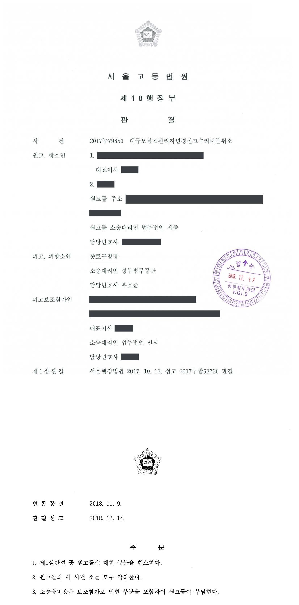
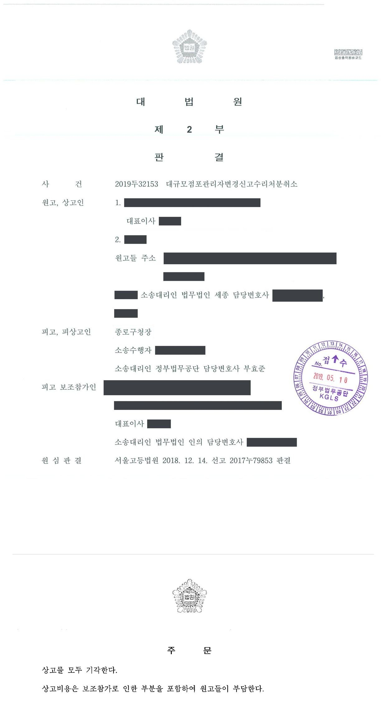
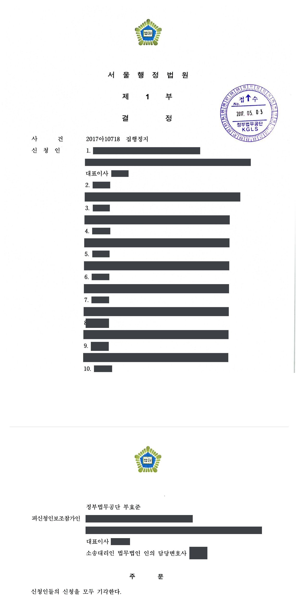

대규모점포관리자 변경신고 수리처분 취소소송 (1·2·3심·집행정지)
서울행정법원 2017구합53736 · 서울고등법원 2017누79853 · 대법원 2019두32153 · 서울행정법원 2017아10718 · 담당변호사 부효준
판결문




사건의 요지
집합상가의 대규모점포관리자 지위를 둘러싼 분쟁에서 상가자치위원회 등이 변경신고 수리처분의 취소를 구한 사건으로, 수리처분의 처분성과 원고적격이 쟁점이 되었습니다. 1심은 청구를 받아들이지 않았고 항소심은 소를 각하하였으며 대법원은 상고를 받아들이지 않았습니다. 집행정지 신청도 받아들여지지 않았습니다.
사건의 주요 내용
이 사건 상가는 2007년 대규모점포 개설등록을 마친 집합상가로, 2008년 대규모점포관리자로 신고된 회사가 2009년 폐업한 뒤에는 구분소유자들로 구성된 관리단이 유지관리업무를 맡아 왔습니다. 2016년 7월 임시관리단 집회에서 관리인으로 선임된 사람이 같은 해 8월 원고 자치위원회를 설립하고 종전 관리자 회사로부터 대규모점포관리자 지위를 양수하는 계약을 맺은 뒤 관할 구청장(처분청)에게 변경신고를 하였고, 처분청은 입점상인 3분의 2 이상의 동의 증빙을 보완하라고 안내하면서 확인서를 발급하였습니다.
한편 입점상인 일부는 원고 자치위원회의 지위에 이의를 제기하면서 입점상인 다수의 동의를 얻었다며 가칭 상가운영위원회 명의로 대규모점포관리자 변경신고를 하였고, 처분청은 2016년 11월 '6개월 이내에 법인 등을 설립하여 관련 서류를 제출할 것'을 조건으로 이를 수리하였습니다(제1처분). 운영위원회가 법인(피고보조참가인)을 설립하여 관리자를 변경하는 신고를 하자 처분청은 2017년 1월 이를 다시 수리하였습니다(제2처분).
원고 자치위원회와 입점상인 등 30명은 두 수리처분의 취소를 구하는 소송과 집행정지 신청을 하였습니다. 집행정지 신청은 2017년 4월 기각되었고, 본안 제1심은 청구를 기각하였으며, 원고 자치위원회와 입점상인이라고 주장하는 1명이 항소하였습니다. 부효준 변호사는 처분청을 대리하여 제1심부터 상고심까지 수행하였습니다.
원고의 주장
- 시행규칙상 변경신고는 기존에 대규모점포관리자 신고를 마친 자가 변경사항을 반영하는 신고이므로, 원고 자치위원회가 적법하게 관리자 업무를 수행하고 있는 상태에서 전혀 별개의 단체가 한 변경신고를 수리한 것은 변경신고 대상이 될 수 없는 것을 수리한 하자가 있다고 주장하였습니다.
- 처분청이 원고 자치위원회에 대한 신고 수리를 별도로 취소하지 않은 이상 운영위원회는 동의를 얼마나 받았는지와 무관하게 새로 신고할 수 없고, 기존 관리자인 원고 자치위원회와 협의한 서류도 제출하지 않았다고 주장하였습니다.
- 운영위원회는 입점상인 3분의 2 이상의 동의를 받지 못하였고 일부 동의서는 중복 제출되었거나 입점상인이 아닌 사람이 작성하였거나 법인인감이 누락되었으며 처분 전에 철회되기도 하였으므로 요건을 갖추지 못하였고, 제1처분이 위법하므로 이를 토대로 한 제2처분도 위법하다고 주장하였습니다. 항소심에서는 사전통지·의견청취 절차를 거치지 않은 절차적 위법도 추가로 주장하였습니다.
부효준 변호사의 주장
- 대규모점포관리자 변경신고는 자기완결적 신고로서 신고 자체로 효력이 발생하므로, 수리처분은 원고들의 법률상 지위에 영향을 미치지 않아 취소소송의 대상이 되지 않는다고 본안전항변을 하였습니다.
- 원고 자치위원회의 변경신고는 입점상인 3분의 2 이상의 동의요건을 갖추지 못하여 그 수리가 당연무효이므로 원고 자치위원회는 처분이 취소되어도 관리자 지위를 회복할 수 없어 취소를 구할 법률상 이익이 없고, 나머지 원고들은 처분의 상대방이 아닌 입점상인으로서(항소한 개인 원고는 입점상인임을 인정할 증거도 없는 사람으로서) 원고적격이 없다고 주장하였습니다.
- 본안에 관하여는 운영위원회가 제출한 동의서가 유효하게 입점상인 3분의 2 이상에 이르므로 수리처분이 적법하다고 주장하였습니다.
법원의 판단
제1심은 대규모점포관리자 신고는 행정청이 요건을 심사하여 수리 여부를 결정하는 '수리를 요하는 신고'이므로 수리처분은 항고소송의 대상이 되고 원고들에게 원고적격도 있다고 보아 본안전항변을 배척하였으나, 본안에서는 원고 자치위원회에 대한 신고 수리는 요건을 갖추지 못하여 당연무효이고 운영위원회에 대한 제1처분은 관리자가 없는 상태에서 새로운 관리자 신고를 수리한 것이며, 입점상인 248명 중 169명(68.15%)의 유효한 동의가 있어 3분의 2 요건을 충족한다고 보아 청구를 기각하였습니다.
항소심은 결론을 달리하여 소를 각하하였습니다. 법령에 대규모점포관리자의 지위 승계 규정이 없고 종전 관리자 회사가 이미 2009년 폐업한 점 등에 비추어 원고 자치위원회의 신고는 '변경신고'가 아니라 입점상인 3분의 2 이상의 동의를 요하는 '신규신고'인데 그 요건을 갖추지 못하였으므로 그 수리는 중대·명백한 하자가 있어 당연무효이고, 따라서 참가인이 관리자 지위를 얻더라도 원고 자치위원회의 법률상 지위에는 변동이 없어 원고적격이 없다고 보았습니다. 개인 원고는 입점상인임을 인정할 증거가 없고 입점상인 법인의 대표이사라는 지위만으로는 원고적격이 없다고 하였습니다.
항소심은 가정적으로 본안도 살펴, 입점상인 수는 매장면적과 관련된 '점포수'를 기준으로 산정해야 하고, 영업 중인 점포 708개 가운데 운영위원회가 제출한 600건의 동의서 중 41건만 무효여서 559건(3분의 2인 472건 이상)의 유효한 동의서가 제출되었으므로 각 처분은 적법하다고 덧붙였습니다. 원고들이 상고하였으나 대법원은 2019년 5월 심리불속행으로 상고를 기각하였습니다.
따라서 원고 자치위원회가 피고로부터 2016. 8. 11.자로 수리된 이 사건 상가에 대한 대규모점포관리자 변경신고는 구 유통산업발전법 제12조 제3항 후단의 대규모점포등관리자 '변경신고'가 아니라 같은 항 전단에 의하여 새롭게 대규모점포등관리자로 신고하는 '신규신고'에 해당한다고 보는 것이 타당하다. 이처럼 원고 자치위원회의 대규모점포관리자 변경신고를 구 유통산업발전법 제12조 제3항 전단의 '신규신고'로 보는 이상, 원고 자치위원회의 대규모점포관리자 변경신고에는 위 '신규신고'의 요건 즉, 구 유통산업발전법 제12조 제2항 제2호 가목의 요건인 '입점상인 3분의 2 이상의 동의'를 반드시 갖추어야 한다.
서울고등법원 2017누79853 판결 이유 '3. 다. 1) 가) 원고 자치위원회의 대규모점포관리자 변경신고의 법적 성격 — (3) 구체적 판단' 부분
행정처분이 당연무효라고 하기 위하여는 처분에 위법사유가 있다는 것만으로는 부족하고 하자가 법규의 중요한 부분을 위반한 중대한 것으로서 객관적으로 명백한 것이어야 함이 원칙이고, 하자의 중대ㆍ명백 여부를 판별함에 있어서는 법규의 목적, 의미, 기능 등을 목적론적으로 고찰함과 동시에 구체적 사안 자체의 특수성에 관하여도 합리적으로 고찰하여야 한다(대법원 2004. 11. 26. 선고 2003두2403 판결, 대법원 2007. 9. 21. 선고 2005두11937 판결 등 참조).
서울고등법원 2017누79853 판결 이유 '3. 다. 1) 나) 원고 자치위원회의 변경신고에 대한 수리처분의 당연무효 여부 — (1) 관련 법리' 부분
위와 같은 관련 법리를 기초로 살피건대, 앞서 본 바와 같이 원고 자치위원회는 종전 관리자 회사로부터 이 사건 상가에 대한 대규모점포관리자 지위를 적법하게 양수하였다고 볼 수 없고, 원고 자치위원회의 대규모점포관리자 변경신고에 대하여 피고가 원고 자치위원회에게 이 사건 상가의 대규모점포관리자 확인서를 발급하여 위 신고를 수리하였다고 하더라도 이는 당연 무효이므로, 이 사건 각 처분에 의하여 참가인에게 이 사건 상가의 대규모점포관리자 지위가 인정된다고 하더라도 원고 자치위원회의 법률상 지위에는 아무런 변동이 없다고 할 것이다. 따라서 원고 자치위원회는 이 사건 각 처분의 취소를 구할 원고적격이 없다.
서울고등법원 2017누79853 판결 이유 '3. 다. 1) 다) 원고 자치위원회의 원고적격 인정 여부 — (2) 구체적 판단' 부분
※ 판결 이유 가운데 이 사건의 판단 기준이 된 부분을 그대로 옮긴 것으로, 당사자 이름 등은 가렸습니다.
이 사건이 보여 주는 것
집합상가의 대규모점포관리자 지위를 둘러싼 분쟁에서는 유통산업발전법 제12조 제2항이 정한 '입점상인 3분의 2 이상의 동의'가 핵심입니다. 이 판결은 기존 관리자로부터 지위를 양수하는 계약을 맺었더라도 법령에 지위 승계 규정이 없는 이상 이를 '변경신고'로 볼 수 없어 신규신고의 동의요건을 갖추어야 하며, 요건을 갖추지 못한 신고를 행정청이 수리하였더라도 그 수리는 당연무효여서 경쟁 단체에 대한 수리처분을 다툴 원고적격조차 인정되지 않는다는 점을 보여 줍니다.
또한 동의자 수는 '점포수'를 기준으로 산정하되 매장이 아닌 작업장은 제외되고, 처분 전에 철회된 동의서나 처분 후에 다시 제출된 동의서는 유효한 동의로 보지 않는 등 동의서 하나하나의 유효성이 처분의 적법성을 좌우합니다. 신고를 수리하는 행정청으로서는 동의서를 점포 단위로 검증하고 보완 요청 기록을 남겨 두는 것이 중요합니다.
관련 법령유통산업발전법 제12조 제2항·제3항, 제13조, 제49조 제2항 제2호 · 유통산업발전법 시행규칙 제6조 · 행정절차법 제2조 제4호, 제21조, 제22조 · 행정소송법 제8조 제2항, 민사소송법 제420조
관련 단어대규모점포관리자변경신고 수리처분유통산업발전법 제12조입점상인 3분의 2 동의신규신고수리를 요하는 신고원고적격당연무효소 각하집행정지 기각집합상가동의서 철회
비슷한 처분을 받으셨다면
행정처분은 처분이 있음을 안 날부터 90일 이내에 행정심판이나 취소소송으로 다투어야 하고, 기간이 지나면 돌이킬 수 없는 처분은 집행정지를 서둘러야 합니다. 처분서를 받은 날짜부터 확인해 드립니다.